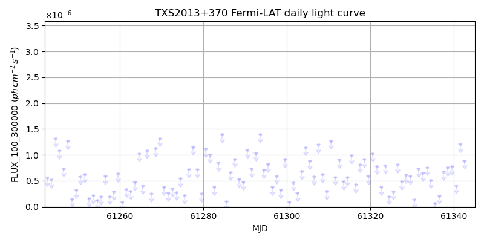
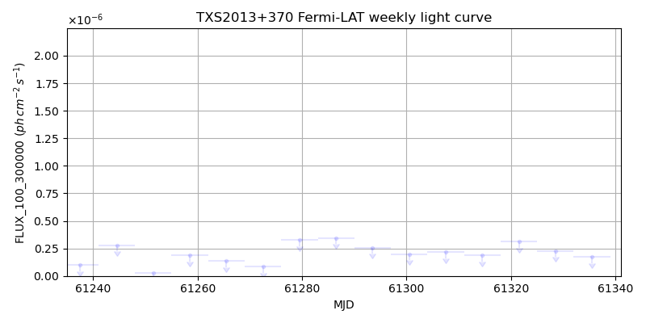
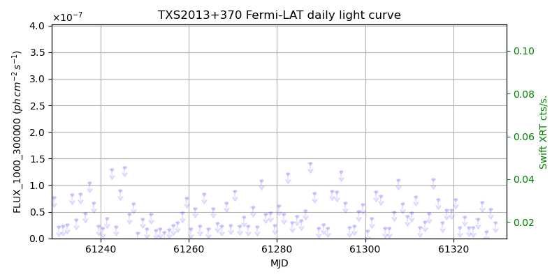
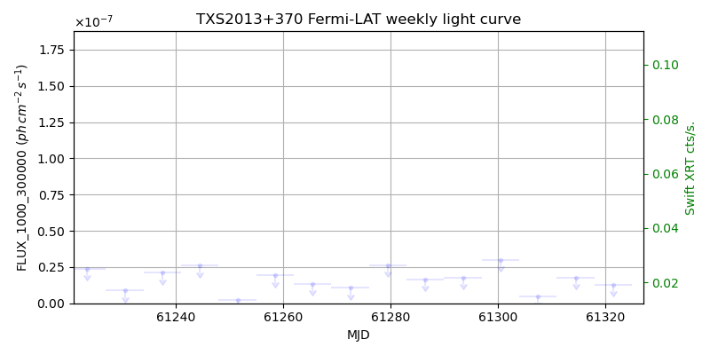

LAT Lightcurve site: https://fermi.gsfc.nasa.gov/ssc/data/access/lat/msl_lc/source/TXS_2013p370
Swift site: https://www.swift.psu.edu/monitoring/source.php?source=TXS2013+370
NED: Query
Time of last update of this page: UT: 2026-10-17 15:27 (MJD: 61330.644)
| Property | Value |
|---|---|
| R.A. | 20:15:28.80 |
| Dec. | 37:10:58.8 |
| z | 0.858 |
| 3FGL SpectrumType | |
| 3FGL PL Index | -1.00 |
| 3FGL Flux_100_300000 | -1.00e+00 |
| 3FGL Flux_1000_300000 | -1.00e+00 |
| 3FGL Flux >200 GeV | -1.00e+00 |
| 3FGL Extrap. Crab >200 GeV | -1.00 |
| 3FGL Flux After EBL Absorption >200GeV | -1.00e+00 |
| 3FGL EBL Crab Fraction >200GeV | -1.00 |

| MJD | dMJD | Flux | dFlux | Frac3FGL | FracCrab>200GeV | EBLFracCrab>200GeV |
|---|---|---|---|---|---|---|
| 61325.50 | 0.50 | 2.92e-07 | 0.00e+00 | 0.00 | 0.00 | -0.00 |
| 61326.50 | 0.50 | 8.13e-07 | 0.00e+00 | 0.00 | 0.00 | -0.00 |
| 61327.50 | 0.50 | 4.88e-07 | 0.00e+00 | 0.00 | 0.00 | -0.00 |
| 61328.50 | 0.50 | 6.17e-07 | 0.00e+00 | 0.00 | 0.00 | -0.00 |
| 61329.50 | 0.50 | 5.88e-07 | 0.00e+00 | 0.00 | 0.00 | -0.00 |

| MJD | dMJD | Flux | dFlux | Frac3FGL | FracCrab>200GeV | EBLFracCrab>200GeV |
|---|---|---|---|---|---|---|
| 61293.50 | 3.50 | 2.56e-07 | 0.00e+00 | 0.00 | 0.00 | -0.00 |
| 61300.50 | 3.50 | 1.98e-07 | 0.00e+00 | 0.00 | 0.00 | -0.00 |
| 61307.50 | 3.50 | 2.19e-07 | 0.00e+00 | 0.00 | 0.00 | -0.00 |
| 61314.50 | 3.50 | 1.86e-07 | 0.00e+00 | 0.00 | 0.00 | -0.00 |
| 61321.50 | 3.50 | 3.14e-07 | 0.00e+00 | 0.00 | 0.00 | -0.00 |

| MJD | dMJD | Flux | dFlux | Frac3FGL | FracCrab>200GeV | EBLFracCrab>200GeV |
|---|---|---|---|---|---|---|
| 61325.50 | 0.50 | 3.61e-08 | 0.00e+00 | 0.00 | 0.00 | -0.00 |
| 61326.50 | 0.50 | 6.80e-08 | 0.00e+00 | 0.00 | 0.00 | -0.00 |
| 61327.50 | 0.50 | 1.34e-08 | 0.00e+00 | 0.00 | 0.00 | -0.00 |
| 61328.50 | 0.50 | 5.41e-08 | 0.00e+00 | 0.00 | 0.00 | -0.00 |
| 61329.50 | 0.50 | 2.94e-08 | 0.00e+00 | 0.00 | 0.00 | -0.00 |

| MJD | dMJD | Flux | dFlux | Frac3FGL | FracCrab>200GeV | EBLFracCrab>200GeV |
|---|---|---|---|---|---|---|
| 61293.50 | 3.50 | 1.77e-08 | 0.00e+00 | 0.00 | 0.00 | -0.00 |
| 61300.50 | 3.50 | 2.99e-08 | 0.00e+00 | 0.00 | 0.00 | -0.00 |
| 61307.50 | 3.50 | 4.97e-09 | 0.00e+00 | 0.00 | 0.00 | -0.00 |
| 61314.50 | 3.50 | 1.79e-08 | 0.00e+00 | 0.00 | 0.00 | -0.00 |
| 61321.50 | 3.50 | 1.30e-08 | 0.00e+00 | 0.00 | 0.00 | -0.00 |
--------------------------------------------------------- Using user-supplied coords: 20:15:28.80 37:10:58.8 2000 --------------------------------------------------------- FLWO UT night of: 2026-10-18 Local Sid. @ Midnight: 01:23 Sunset (-15.0) (local, UT): 18:56 01:56 Sunrise (-15.0) (local, UT): 05:22 12:22 Moonrise (local, UT): Moonset (local, UT): 22:59 05:59 Moon phase: 0.47 --------------------------------------------------------- AzTime LSID UT Obj_el Obj_az Mn_el Mn_az Sep. --------------------------------------------------------- 18:56 20:18 01:56 84.4 355.4 30.5 195.3 64.8 19:26 20:48 02:26 81.3 312.3 28.5 202.5 64.7 19:56 21:18 02:56 76.0 297.8 25.9 209.3 64.6 20:26 21:48 03:26 70.2 292.8 22.6 215.6 64.5 20:56 22:19 03:56 64.3 291.0 18.8 221.3 64.4 21:26 22:49 04:26 58.3 290.8 14.5 226.6 64.3 21:56 23:19 04:56 52.3 291.4 9.9 231.4 64.2 22:26 23:49 05:26 46.4 292.6 5.0 235.7 64.0 22:56 00:19 05:56 40.5 294.1 0.2 239.8 63.9 23:26 00:49 06:26 34.7 296.0 -5.5 243.5 63.8 23:56 01:19 06:56 29.0 298.1 -11.3 247.0 63.6 00:26 01:49 07:26 23.4 300.6 -17.0 250.4 63.5 00:56 02:19 07:56 18.0 303.2 -22.8 253.6 63.4 01:26 02:49 08:26 12.8 306.2 -28.7 256.7 63.2 01:56 03:19 08:56 7.8 309.4 -34.7 259.8 63.1 02:26 03:49 09:26 3.1 313.0 -40.7 263.0 62.9 02:56 04:20 09:56 -0.9 316.9 -46.8 266.4 62.8 03:26 04:50 10:26 -5.7 321.2 -52.8 270.1 62.7 03:56 05:20 10:56 -9.7 325.8 -58.9 274.3 62.5 04:26 05:50 11:26 -13.1 330.9 -64.9 279.6 62.4 04:56 06:20 11:56 -15.9 336.3 -70.8 287.0 62.3 05:22 06:46 12:22 -17.9 341.3 -75.7 297.1 62.2 --------------------------------------------------------- Dark hours >55 deg.: 0.00